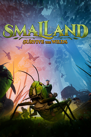

Smalland - Survive the Wilds
Detalles
|  | |
| Tiempo de juego | No Jugado |
| Última actividad | Nunca |
| Añadido | 11/13/2024 0:35:38 |
| Modificado | 11/13/2024 1:05:53 |
| Estado de finalización | No Jugado |
| Librería | Playnite |
| Fuente | PORCHE |
| Plataforma | PC (Windows) |
| Fecha de lanzamiento | 2/15/2024 |
| Puntuación de la Comunidad | 81 |
| Puntuación de la Crítica | |
| Puntuación de usuario | |
| Género | Acción Aventura Indie Rol |
| Desarrollador | Merge Games |
| Editor | Maximum Entertainment Merge Games |
| Característica | Compat. Total Con Mando Cooperativo Cooperativo En Línea Logros De Multijugador Préstamo Familiar Un Jugador |
| Enlaces | Punto de encuentro Discusiones Guías Noticias Página de la tienda PCGamingWiki Logros |
| Tag | Acción Acción y aventura Aventura Construcción Construcción de bases Construcción de ciudades Cooperativos Cooperativos en línea Exploración Fabricación Multijugador Mundo abierto Personalización de personajes Primera persona Rol Sandbox Supervivencia Supervivencia en mundo abierto Tercera persona Un jugador |
Descripción
«Antes de la época de los gigantes, vivíamos en libertad bajo el Sol y la Luna. Han pasado siglos, pero esas historias del mundo de la superficie se han transmitido de generación en generación. Ahora los gigantes se han ido y tú, Vanguard, debes aventurarte una vez más en la naturaleza y embarcarte en una misión urgente. Sé valiente y no titubees...»


Explora la extensa «Tierra de los Pequeños»
Atraviesa charcos del tamaño de un lago, escala árboles del tamaño de un rascacielos, atraviesa cavernosas grietas en las carreteras, todo mientras experimentas en un enorme mundo abierto desde una nueva perspectiva. Explora densos bosques, peligrosos pantanos y extrañas ruinas, restos de la época anterior. Descubre la tradición y el conocimiento de los PNJ que hay escondidos y repartidos por todo el mundo y aprende a sobrevivir en este extensa selva.Domestica y monta a criaturas
Descubre recetas que te permitirán domar y montar a una gran variedad de criaturas. Salta grandes distancias a lomos de un saltamontes, avanza sobre una libélula y corre de un lugar a otro encima de una araña. Este mundo y sus habitantes están aquí para que los conquistes.Sobrevivid juntos
Juega junto a tus amigos con la compatibilidad para hasta 10 jugadores en el modo multijugador. Explorad juntos, luchad juntos, construid juntos y sobrevivid en la naturaleza en equipo.Construye tus campamentos en el suelo o entre los árboles
Busca o mejora los recursos para construir tu campamento con varios niveles de materiales, desde hojas y ramitas hasta piedras robustas. Elige tu lugar favorito del mundo y construye o escala grandes árboles, para tener tu propio asentamiento en la copa.Crea poderosos conjuntos de armaduras
Colecciona armaduras poderosas que te brindarán resistencias y habilidades, y combínalas para personalizar tu apariencia. Deslízate por los cielos con una armadura alada, balancéate de árbol en árbol con el garfio y muchas cosas más.Sobrevive en la selva
La mayoría de las criaturas que encuentres te considerarán una parte inferior de la cadena alimentaria: las hormigas, las cucarachas, los escarabajos, las avispas y las arañas te ven como posible alimento. Las condiciones meteorológicas y las estaciones cambian constantemente, por lo que si quieres sobrevivir un día más, la preparación es clave.